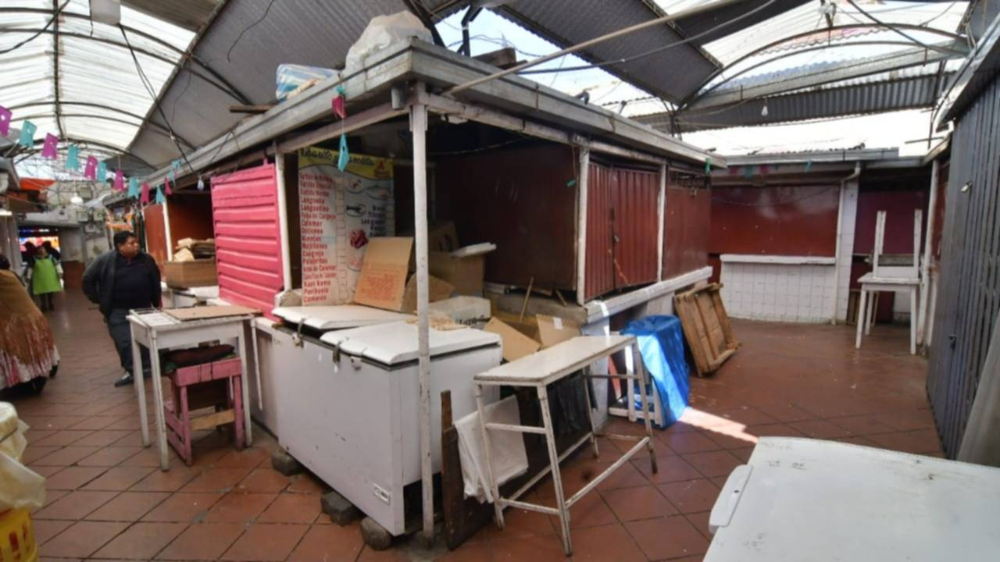

La profecía autocumplida: Comprar "por si acaso"
Análisis de la situación en La Paz y El Alto (2025-2026)
En tiempos de incertidumbre económica, la psicología del consumidor paceño se vuelve altamente reactiva. Cuando surge un rumor de que faltará Gas Licuado de Petróleo (GLP) en las distribuidoras de Senkata o que las agencias de EMAPA en el centro se quedarán sin arroz, ocurre un fenómeno conocido como "compras de pánico". Las personas, movidas por el miedo a quedarse sin suministros, compran tres o cuatro veces más de lo que normalmente consumirían.
¿Cuál es el problema real? La cadena de suministro (supermercados como Ketal o Hipermaxi, mercados populares como la Rodríguez o camiones repartidores) está diseñada para cubrir una demanda estadística normal. Si un camión de gas llega a un barrio con 100 garrafas porque históricamente se venden 90, pero debido a un rumor de WhatsApp cada familia decide llevarse 2 garrafas en lugar de 1, el camión se vacía en la primera cuadra. Así, la escasez que temían se hace realidad debido a su propio miedo.
"Me llegó un audio al grupo de la junta de vecinos diciendo que desde mañana ya no habría harina ni aceite en la ciudad. Fui corriendo a la tienda y compré 5 litros de aceite, aunque en casa solo usamos uno al mes. Cuando mi vecina fue por la tarde a comprar el suyo para cocinar, ya no había nada." - Relato de una ciudadana en redes sociales

El Factor de la Desinformación
Las redes sociales amplifican el impacto. Un rumor falso puede aumentar la demanda local en un 40% a 80% en menos de 2 horas, colapsando cualquier sistema logístico barrial en La Paz.